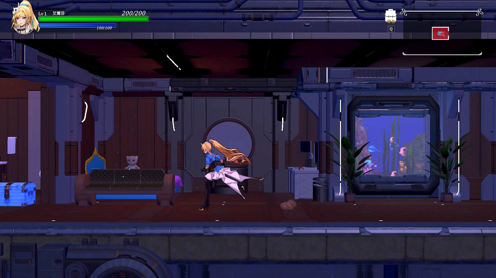
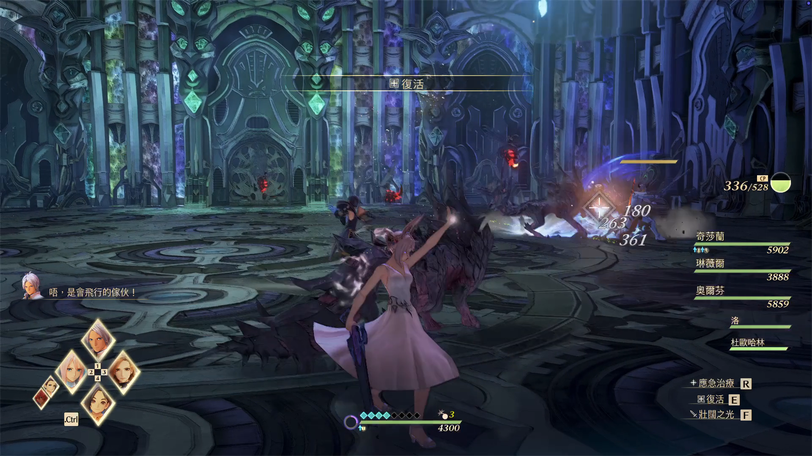

Windows gaming on Apple Silicon.
Play supported Windows games on your Mac. AppleJuice translates x86 and x64 code to ARM64 and brings Direct3D graphics to Metal.
Apple Silicon · macOS 13 or later
Gameplay showcase
Both gameplay chapters were captured on Apple M4 Pro with 64 GiB of unified memory, macOS 27.2.1 and AppleJuice 0.26.1126 (build 727). Both games use Direct3D 11 with 1920 × 1080 output. Launcher MetalFX upscaling and frame interpolation were off.
At 0:00, Steam launches Frontier Hunter from the Library. All clips are silent, real-time window captures. The video is encoded at 30 fps. Open the MP4.

Steam build 15701452 · 2 CPU cores

Steam build 12823607 · 4 CPU cores
From the tested library
Romance of the Three Kingdoms XI with Power Up Kit reaches its own frame-rate cap with default settings in build 727. Death Stranding Director’s Cut can load a Chapter 3 save, but white flicker and uneven performance keep its rating at “Launches”.
Browse game and tool recordsInside the runtime
A resident translator produces ARM64 code. Windows services connect the game to native graphics, input and audio. Optional spatial MetalFX upscaling and headphone mixing work at the output stage.
Explore the architectureCPU performance
Compare Geekbench 7 scores by workload on an Apple M4 Pro.
View benchmark scoresGetting started
How do I install a game?
Copy AppleJuice.app from the release DMG to Applications. Open the Launcher, choose Add EXE, select your game and review its drive mappings before pressing Play.
How do I install Steam?
Choose Run once and select SteamSetup.exe in the macOS file picker. After setup finishes, Steam.exe appears in the Launcher sidebar. Watch the Steam installation (39 seconds).
Which games work?
The tested list distinguishes default performance, enhanced output, slow gameplay, launch-only and failed runs. Check your edition and settings.